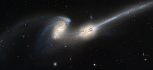
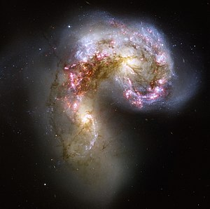

Introduction
From a homogeneous beginning, the formation of the first galaxies, the way galaxies change over time
Galaxy Formation and Evolution
The study of galaxy formation and evolution is concerned with the processes that formed a heterogeneous universe from a homogeneous beginning, the formation of the first galaxies, the way galaxies change over time, and the processes that have generated the variety of structures observed in nearby galaxies. Galaxy formation is hypothesized to occur from structure formation theories, as a result of tiny quantum fluctuations in the aftermath of the Big Bang.The simplest model in general agreement with observed phenomena is the Lambda-CDM model—that is, that clustering and merging allows galaxies to accumulate mass, determining both their shape and structure.
Fundamental Galaxy Types
Spiral
- Blue star-forming galaxies
- Spiral galaxies are quite thin, dense, and rotate relatively fast
Eliptical
- Red star-forming galaxies
- Stars in elliptical galaxies have randomly oriented orbits.
Active Galactic Nuclei (AGN)
The majority of giant galaxies contain a supermassive black hole in their centers, ranging in mass from millions to billions of times the mass of our Sun. The black hole mass is tied to the host galaxy bulge or spheroid mass.
Galaxy Formation, The Beginning
The study of galaxy formation and evolution is concerned with the processes that formed a heterogeneous universe from a homogeneous beginning, the formation of the first galaxies, the way galaxies change over time, and the processes that have generated the variety of structures observed in nearby galaxies. Galaxy formation is hypothesized to occur from structure formation theories, as a result of tiny quantum fluctuations in the aftermath of the Big Bang.The simplest model in general agreement with observed phenomena is the Lambda-CDM model—that is, that clustering and merging allows galaxies to accumulate mass, determining both their shape and structure.
The earliest stage in the evolution of galaxies is their formation. When a galaxy forms, it has a disk shape and is called a spiral galaxy due to spiral-like "arm" structures located on the disk. There are different theories on how these disk-like distributions of stars develop from a cloud of matter: however, at present, none of them exactly predicts the results of observation.
Disk Galaxy formation theories
Top-down theories
Olin Eggen, Donald Lynden-Bell, and Allan Sandage in 1962, proposed a theory that disk galaxies form through a monolithic collapse of a large gas cloud. The distribution of matter in the early universe was in clumps that consisted mostly of dark matter. These clumps interacted gravitationally, putting tidal torques on each other that acted to give them some angular momentum. As the baryonic matter cooled, it dissipated some energy and contracted toward the center. With angular momentum conserved, the matter near the center speeds up its rotation. Then, like a spinning ball of pizza dough, the matter forms into a tight disk. Once the disk cools, the gas is not gravitationally stable, so it cannot remain a singular homogeneous cloud. It breaks, and these smaller clouds of gas form stars. Since the dark matter does not dissipate as it only interacts gravitationally, it remains distributed outside the disk in what is known as the dark halo. Observations show that there are stars located outside the disk, which does not quite fit the "pizza dough" model. It was first proposed by Leonard Searle and Robert Zinn that galaxies form by the coalescence of smaller progenitors. Known as a top-down formation scenario, this theory is quite simple yet no longer widely accepted.
Bottom-up theory
More recent theories include the clustering of dark matter halos in the bottom-up process. Instead of large gas clouds collapsing to form a galaxy in which the gas breaks up into smaller clouds, it is proposed that matter started out in these “smaller” clumps (mass on the order of globular clusters), and then many of these clumps merged to form galaxies, which then were drawn by gravitation to form galaxy clusters. This still results in disk-like distributions of baryonic matter with dark matter forming the halo for all the same reasons as in the top-down theory. Models using this sort of process predict more small galaxies than large ones, which matches observations.
Astronomers do not currently know what process stops the contraction. In fact, theories of disk galaxy formation are not successful at producing the rotation speed and size of disk galaxies. It has been suggested that the radiation from bright newly formed stars, or from an active galactic nucleus can slow the contraction of a forming disk. It has also been suggested that the dark matter halo can pull the galaxy, thus stopping disk contraction.
The Lambda-CDM model is a cosmological model that explains the formation of the universe after the Big Bang. It is a relatively simple model that predicts many properties observed in the universe, including the relative frequency of different galaxy types; however, it underestimates the number of thin disk galaxies in the universe. The reason is that these galaxy formation models predict a large number of mergers. If disk galaxies merge with another galaxy of comparable mass (at least 15 percent of its mass) the merger will likely destroy, or at a minimum greatly disrupt the disk, and the resulting galaxy is not expected to be a disk galaxy (see next section). While this remains an unsolved problem for astronomers, it does not necessarily mean that the Lambda-CDM model is completely wrong, but rather that it requires further refinement to accurately reproduce the population of galaxies in the universe.
Image
Elyptical Galaxies, The most Evolved Form?
Elliptical galaxies (most notably supergiant ellipticals, such as ESO 306-17) are among some of the largest known thus far. Their stars are on orbits that are randomly oriented within the galaxy (i.e. they are not rotating like disk galaxies). A distinguishing feature of elliptical galaxies is that the velocity of the stars does not necessarily contribute to flattening of the galaxy, such as in spiral galaxies. Elliptical galaxies have central supermassive black holes, and the masses of these black holes correlate with the galaxy's mass.
Elliptical galaxies have two main stages of evolution. The first is due to the supermassive black hole growing by accreting cooling gas. The second stage is marked by the black hole stabilizing by suppressing gas cooling, thus leaving the elliptical galaxy in a stable state. The mass of the black hole is also correlated to a property called sigma which is the dispersion of the velocities of stars in their orbits. This relationship, known as the M-sigma relation, was discovered in 2000. Elliptical galaxies mostly lack disks, although some bulges of disk galaxies resemble elliptical galaxies. Elliptical galaxies are more likely found in crowded regions of the universe (such as galaxy clusters).
Astronomers now see elliptical galaxies as some of the most evolved systems in the universe. It is widely accepted that the main driving force for the evolution of elliptical galaxies is mergers of smaller galaxies. Many galaxies in the universe are gravitationally bound to other galaxies, which means that they will never escape their mutual pull. If the galaxies are of similar size, the resultant galaxy will appear similar to neither of the progenitors, but will instead be elliptical. There are many types of galaxy mergers, which do not necessarily result in elliptical galaxies, but result in a structural change. For example, a minor merger event is thought to be occurring between the Milky Way and the Magellanic Clouds.
Galaxy quenching, The End?
As described in previous sections, galaxies tend to evolve from spiral to elliptical structure via mergers. However, the current rate of galaxy mergers does not explain how all galaxies move from the "blue cloud" to the "red sequence". It also does not explain how star formation ceases in galaxies. Theories of galaxy evolution must therefore be able to explain how star formation turns off in galaxies. This phenomenon is called galaxy "quenching".
Stars form out of cold gas (see also the Kennicutt–Schmidt law), so a galaxy is quenched when it has no more cold gas. However, it is thought that quenching occurs relatively quickly (within 1 billion years), which is much shorter than the time it would take for a galaxy to simply use up its reservoir of cold gas. Galaxy evolution models explain this by hypothesizing other physical mechanisms that remove or shut off the supply of cold gas in a galaxy. These mechanisms can be broadly classified into two categories: (1) preventive feedback mechanisms that stop cold gas from entering a galaxy or stop it from producing stars, and (2) ejective feedback mechanisms that remove gas so that it cannot form stars.
One theorized preventive mechanism called “strangulation” keeps cold gas from entering the galaxy. Strangulation is likely the main mechanism for quenching star formation in nearby low-mass galaxies. The exact physical explanation for strangulation is still unknown, but it may have to do with a galaxy's interactions with other galaxies. As a galaxy falls into a galaxy cluster, gravitational interactions with other galaxies can strangle it by preventing it from accreting more gas. For galaxies with massive dark matter halos, another preventive mechanism called “virial shock heating” may also prevent gas from becoming cool enough to form stars.
Ejective processes, which expel cold gas from galaxies, may explain how more massive galaxies are quenched. One ejective mechanism is caused by supermassive black holes found in the centers of galaxies. Simulations have shown that gas accreting onto supermassive black holes in galactic centers produces high-energy jets; the released energy can expel enough cold gas to quench star formation. Our own Milky Way and the nearby Andromeda Galaxy currently appear to be undergoing the quenching transition from star-forming blue galaxies to passive red galaxies.